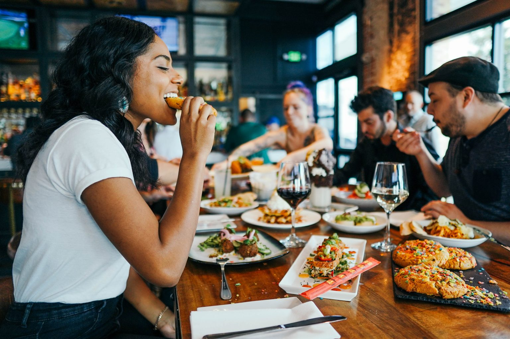

About Us
We offer a variety of dishes and drinks that cater to every taste, from traditional favorites to new and exciting flavors.
The Journey of Food and Drinks: From a Small Lagos Stall to a National Culinary Powerhouse
In the heart of Lagos, along a bustling roadside filled with the sounds of vendors and the hum of traffic, stood a modest little restaurant called Food and Drinks. It started as a humble operation, a tiny stall with a handful of wooden tables, serving local dishes to anyone passing by. Jollof rice, pounded yam, and pepper soup filled the air with a rich, irresistible aroma. The owner, Mrs. Ade, had a simple dream: to feed her community with the best homemade meals, rich in tradition and full of flavor.
As years went by, Mrs. Ade’s vision grew. She saw the changing tastes of the city and decided to blend the beloved local dishes with a touch of continental flair. Soon, alongside the beloved amala and egusi, patrons could find pasta, grilled chicken, and steaks, creating a unique fusion that appealed to everyone.
With this expanded menu and growing reputation, Food and Drinks outgrew its small beginnings. From that one stall in Lagos, it expanded to more locations, first around the city and then beyond. Today, with 76 branches across Nigeria, the restaurant has become a culinary sensation, serving not just local favorites but also continental delights to satisfy the evolving tastes of its customers.
But growth didn’t stop there. Understanding the fast pace of modern life, Food and Drinks introduced a quick and efficient home delivery service, bringing their famous dishes straight to customers' doors. Whether it’s a hot plate of suya or a perfectly grilled sandwich, people now enjoy their favorite meals from the comfort of their homes, no matter where they are in the country.
From a small Lagos street corner to a national name, Food and Drinks continues to uphold its roots, honoring the tradition of local flavors while embracing the future with continental dishes and a fast-paced, modern delivery system. What began as a passion to serve good food to the people has now become a thriving, beloved brand that Nigeria proudly calls its own.